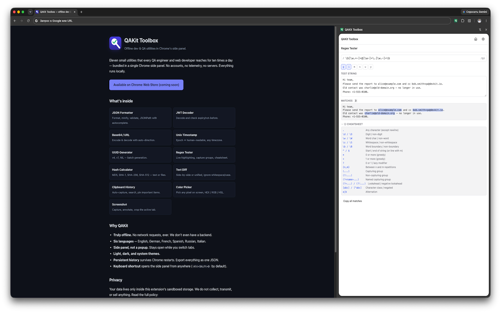
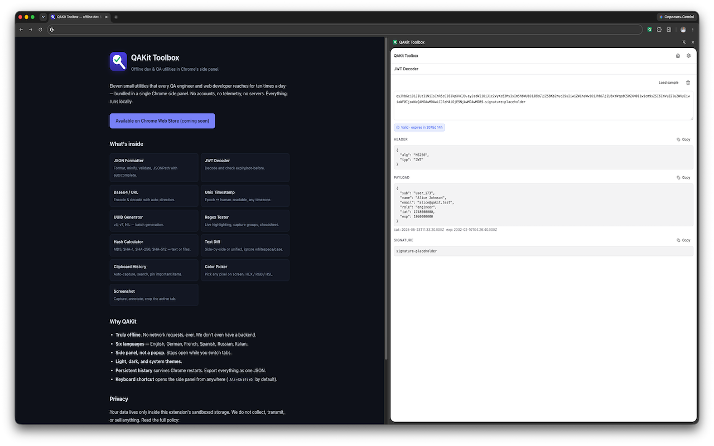
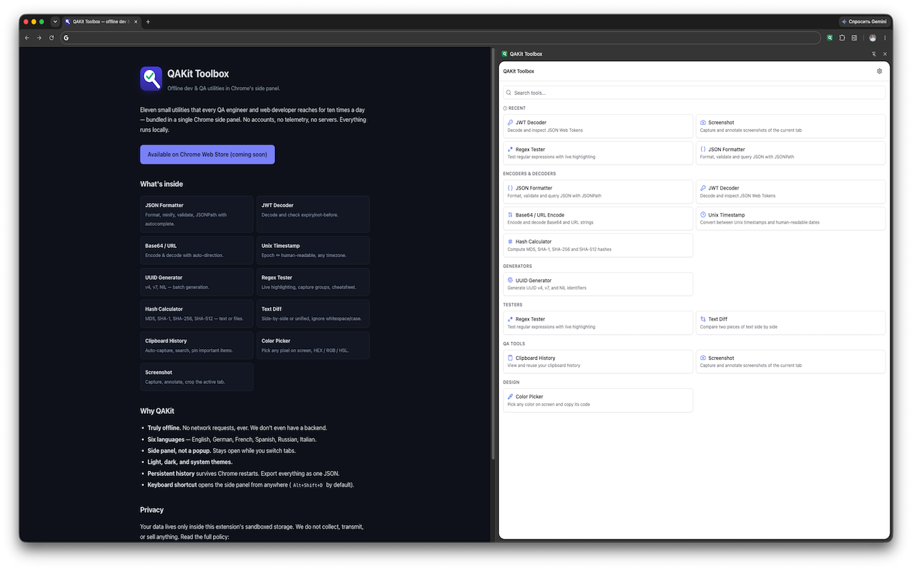
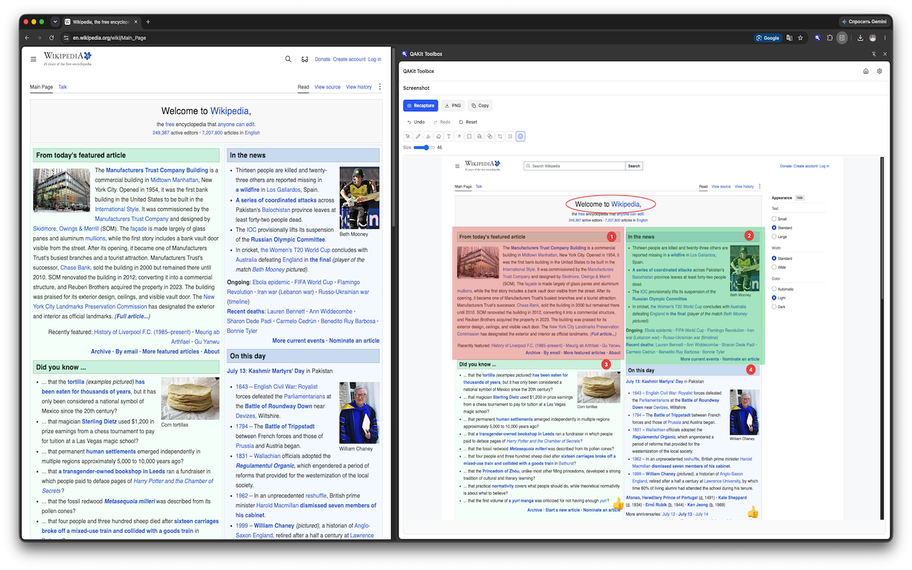
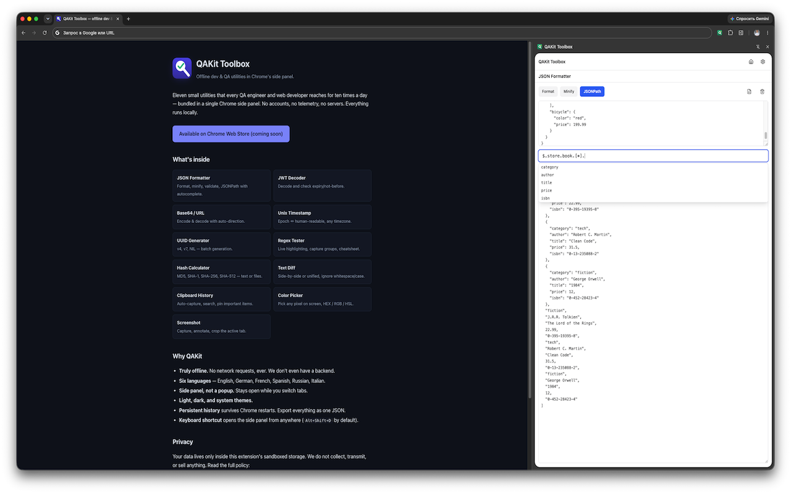

QAKit Toolbox
Offline dev & QA utilities in Chrome's side panel.
Eleven small utilities that every QA engineer and web developer reaches for ten times a day — bundled in a single Chrome side panel. No accounts, no telemetry, no servers. Everything runs locally.
Add to Chrome — FreeSee it in action
{kind=link}

{kind=link}

{kind=link}

{kind=link}

{kind=link}

What's inside
JSON FormatterFormat, minify, validate, JSONPath with autocomplete.
JWT DecoderDecode and check expiry/not-before.
Base64 / URLEncode & decode with auto-direction.
Unix TimestampEpoch ↔ human-readable, any timezone.
UUID Generatorv4, v7, NIL — batch generation.
Regex TesterLive highlighting, capture groups, cheatsheet.
Hash CalculatorMD5, SHA-1, SHA-256, SHA-512 — text or files.
Text DiffSide-by-side or unified, ignore whitespace/case.
Clipboard HistoryAuto-capture, search, pin important items.
Color PickerPick any pixel on screen, HEX / RGB / HSL.
ScreenshotCapture, annotate, crop the active tab.
Why QAKit
- Truly offline. No network requests, ever. We don't even have a backend.
- Six languages — English, German, French, Spanish, Russian, Italian.
- Side panel, not a popup. Stays open while you switch tabs.
- Light, dark, and system themes.
- Persistent history survives Chrome restarts. Export everything as one JSON.
-
Keyboard shortcut opens the side panel from anywhere (
Alt+Shift+Dby default).
Privacy
Your data lives only inside this extension's sandboxed storage. We do not collect, transmit, or sell anything. Read the full policy: